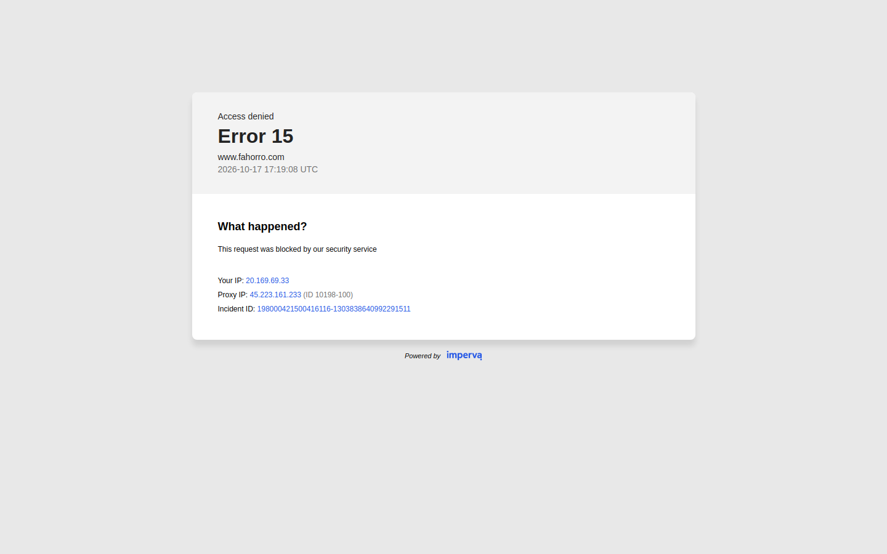
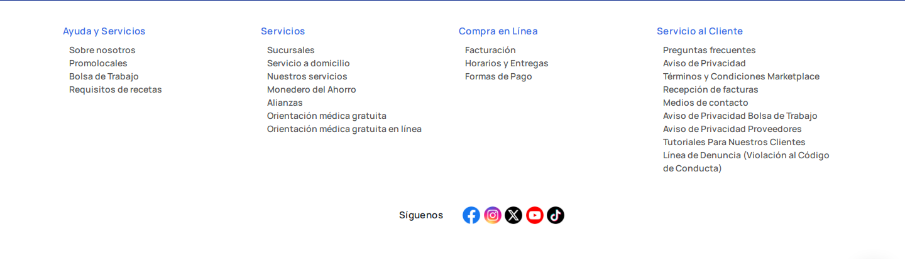
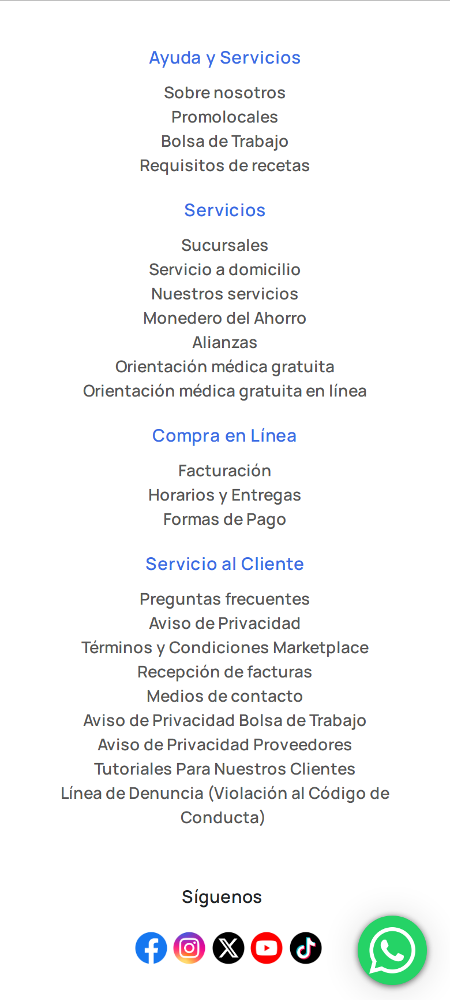

Farmacias del Ahorro
Rubro: Tienda online (eCommerce) · www.fahorro.com
Por qué es referente: Figura entre los sitios de compras más visitados según la fuente citada.
Fuente: Ahrefs · Top 10 sitios de compras en México (jul. 2025)
Compararlo con los demás líderesFotos
- Computadora: 2026-10-17
- Celular: 2026-10-17
- Computadora, categoría: no se pudo sacar
- Computadora, ficha: no se pudo sacar
- Computadora_carrito: no se pudo sacar
- Celular, categoría: 2026-10-17 (posiblemente desactualizada)
- Celular, ficha: 2026-10-17 (posiblemente desactualizada)
- Celular_carrito: no se pudo sacar

Sus partes, una por una
Barra superior · Computadora
Farmacias del Ahorro100 % del ancho · 40 px de alto
Header · Computadora
Farmacias del Ahorro100 % del ancho · 125 px de alto
Logo · Computadora
Farmacias del Ahorro11 % del ancho · 84 px de alto
Menú · Computadora
Farmacias del Ahorro89 % del ancho · 50 px de alto
Banner principal · Computadora
Farmacias del Ahorro89 % del ancho · 556 px de alto
Botón principal · Computadora
Farmacias del Ahorro87 % del ancho · 32 px de alto · bordes 24 pxDibujo a partir de las medidas
Pie de página · Computadora
Farmacias del Ahorro100 % del ancho · 413 px de alto

Header · Celular
Farmacias del Ahorro100 % del ancho · 184 px de alto
Logo · Celular
Farmacias del Ahorro26 % del ancho · 54 px de alto
Menú · Celular
Farmacias del Ahorro8 % del ancho · 178374 px de alto
Banner principal · Celular
Farmacias del Ahorro100 % del ancho · 556 px de alto
Botón principal · Celular
Farmacias del Ahorro87 % del ancho · 32 px de alto · bordes 24 pxDibujo a partir de las medidas
Pie de página · Celular
Farmacias del Ahorro100 % del ancho · 865 px de alto
